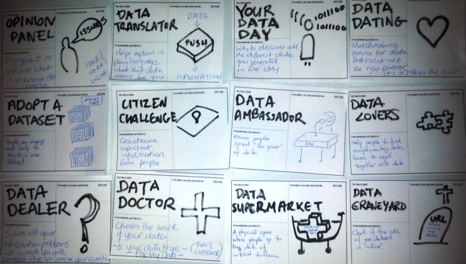

Guest post: 5 things I learned at the Open Data Leaders Network
With our open call for government leaders to join the Open Data Leaders Network launched today, former participant Pauline Riordan reflects on lessons she learned as part of the network, from creating a common language to outsourcing innovation
 Brainstorming ideas at the Open Data Leaders Network, 2016
By Pauline Riordan
I recently took part in the Open Data Leaders Network (ODLN) in the ODI offices in London, representing the Dublinked Open Data Portal for Dublin, Ireland. This was a very intensive but inspiring week of training, networking and ideas exchange with leaders of government open data initiatives from around the world, from other cities and regions like Aragon in Spain, Jakarta and Sao Paulo and national leaders from India, Burkina Faso, Ukraine, Serbia and Italy.
We had a packed itinerary of workshops and sessions to share the latest thinking in open data, help us troubleshoot technical issues and common problems and how best to maximise impact and share stories of success. We also had meetings with leading open data champions like ODI CEO Gavin Starks and ODI International Director Richard Stirling, formerly of data.gov.uk, who shared their experience and lessons with us.
During the visit, I took away some key insights:
Create a common language that resonates with different audiences
One of the first obstacles we face as open data practitioners is a general lack of understanding about what open data is and why we should care about it. We heard a number of different motivations to opening up public data but these essentially boil down to three agendas: stimulating innovation and economic development, driving public sector cost efficiencies and promoting transparency. The ODLN training really helped me to articulate a vision around each of these drivers and to always use language that resonates with the different audiences and the agenda they care about most.
Realise that help is out there
'Go quick, go dirty’ was our mantra when we launched Dublinked in 2011, the idea being to first establish the principle of openness, then work on improving data quality. Four years on, we still have a way to go to systemise data publication and build our technical resource. So I was heartened to hear from Richard Stirling that “data quality is universally awful” but there are tools that even a non technical person like myself can use to improve data quality; for example csvlint to check spreadsheet structure, ODI Open Data Certificates to add context and the Open Data Pathway to check publishing practice.
Demonstrate the impact and benefits of open data
Working in an emerging area like open data, it can be difficult to move beyond the hype to demonstrate real impact and benefits. While open data is free for anyone to access, use and share, there is often a cost to extracting and preparing it and it can be difficult to measure the value in opening it up. Through its global network, the ODI is good at telling data stories about things that matter to ordinary people. I felt there was much to learn from ODI stories and publications. I was impressed with the hard metrics showing significant added value and cost savings achieved by the ODI Startup programme, for example, and will be following this closely.
Outsource innovation
We met with a number of entrepreneurs including those based in the ODI startup programme on day two. What impressed me most was the agility and specialist expertise they can bring to address unmet needs and public-sector challenges. As we in Dublin are planning to launch our first Open Challenge, calling for new ideas to encourage cycling in the city, it was great to learn from the ODI's experience in running these kinds of challenges and supporting the growth of new startups. It was encouraging to see the mutual benefits – the public sector gaining the latest bespoke solutions while also driving innovation by providing startups with a clear route into public procurement.
Take time to build political capital and let others lead
Even though we had very diverse backgrounds, each of us open data leaders faced similar challenges often working in small teams in a complex and resource-constrained public sector. It felt strange to call myself a leader as working in a relatively new field, it can sometimes feel like I am making it up as I go along! This can be a lonely place, so having a supportive peer network to share stories with was incredibly positive and motivating. One of the key takeaways for me was the importance of taking time to build political capital and new relationships, to let others take the lead while ensuring the credit for success is shared around. I’m already putting this learning into practice and hope it will help us bring about lasting change.
This blog first appeared on the Dublinked blog.
The Open Data Leaders Network (ODLN) programme is calling for exceptional global leaders of open data initiatives worldwide to take part in its 6-month programme in 2016-17. Find out more and apply here.
If you have ideas or experience in open data that you'd like to share, pitch us a blog or tweet us at @ODIHQ.